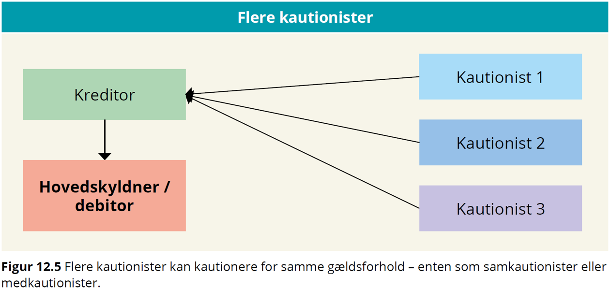
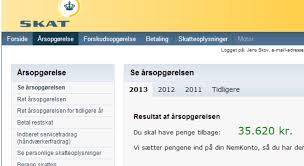
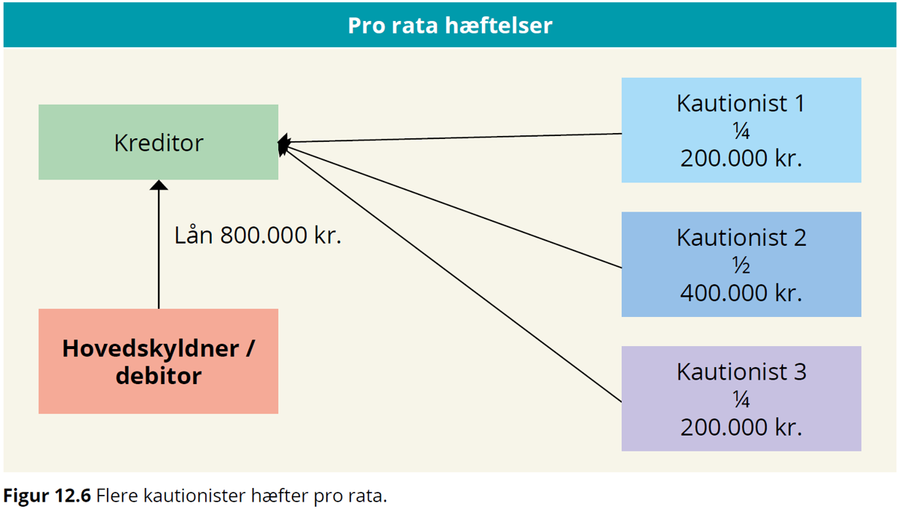
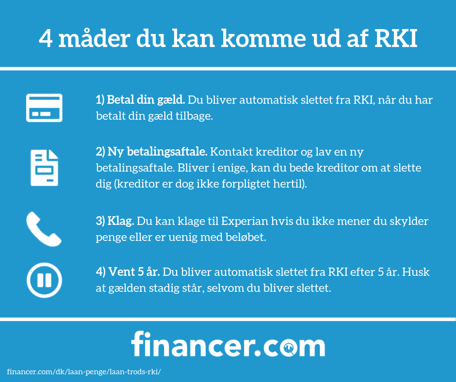
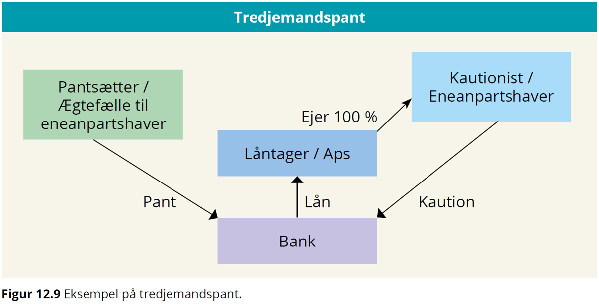

Kapitel 15 Kautionsforhold
Som studerende skal du være særlig opmærksom på følgende problemstillinger ved gennemgangen af sikkerhedsstillelse for gæld i forhold til eksamen:
Kautionsformer især sondringen mellem simpel og selvskyldnerkaution
Sondring mellem privat- og erhvervskaution
Oplysning til kautionisterne i lov om finansiel virksomhed (LFV) § 47 og 48 i forbindelse med hoveddebitors misligholdelse af betaling
Kautionisternes hæftelse og indbyrdes regres
Særlige forældelsesregler
15.1 Kautionsbegreber
Kaution, betyder overtagelse af en økonomisk risiko, som bæres af en kreditor i et skyldforhold, med den virkning, at kautionisten sammen med debitor hæfter for opfyldelsen af debitors betalingspligt.
Ordet kaution kommer af latin cautio ‘forsigtighed, sikkerhed’, af cavere ‘passe på, sikre’.
Kaution er en sikkerhedsstillelse for et gældsforhold
Der er tre parter i kautionsforhold (Se figuren nedenfor):
Låntager = hovedskyldner
Långiver = kreditor
Kautionist
Figur 15.1: Forholdet mellem debitor, kreditor og kautionist
Kautionsaftalen indgås mellem kautionisten og kreditor
Kautionisten har typisk en relation til låntager i forvejen:
Forældre ⇆ børn
Virksomhedsejer ⇆ virksomhed
Moderselskab ⇆ datterselskab
Figur 15.2: Eneanpartshaver stiller kaution overfor banken til sikkerhed for virksomhedens lån
15.2 Stiftelse af kaution
Kautionsaftale indgås mellem kreditor og med en eller flere kautionister.
 (Kilde; Trojka) fig. 15.3.
Aftalelovens regler gælder også for kautionsaftaler, fx:
Stærke og svage ugyldighedsgrunde
Forudsætningslæren
Generalklausulen om tilsidesættelse af urimelige aftaler i aftalelovens §§ 38c, jf. 36.
Kaution er også reguleret i Lov om finansiel virksomhed, se Lovbekendtgørelse nr. 1140 af 26. september 2017 om finansiel virksomhed (FIL), jf. §§ 47 (erhvervskaution) og 48 (privat kaution), hvis kaution gives overfor en finansiel virksomhed
Vigtigt at skelne mellem erhvervskaution og privat kaution.
15.3 Generalklausulen på kautionsforhold
Om anvendelse af aftalelovens § 36 på kautionsforhold findes en del retspraksis (domme) på området:
I dommen U 1993.949 V blev en kautionsaftale tilsidesat i medfør af aftalelovens § 36. En 73-årig kvinde K, der var nervesvækket og uden indsigt i økonomiske anliggender, havde over for en sparekasse S påtaget sig selvskyldnerkaution på indtil 100.000 kr. for sin stedsøn P’s ældre og fremtidige gæld til S. Ved kautionsløftets afgivelse var P’s engagement med S nødlidende på grund af overtræk på ca. 124.000 kr. og ville blive opsagt, hvis der ikke blev skaffet yderligere sikkerhed, fx ved kaution. K var ikke af S blevet informeret om P’s engagement og overtrækkene.
I dommen U 1994.126 V blev en kautionsforpligtelse ligeledes tilsidesat i medfør af aftalelovens § 36:
I dommen U 1997.522 Ø fandtes det ikke urimeligt eller i strid med redelig handlemåde, at et pengeinstitut gjorde en låneaftale gældende, da pengeinstituttet ved et låns oprettelse ikke burde have vidst, at en 18-årig ikke inden overskuelig tid ville kunne betale de månedlige ydelser. Der blev overført godt 170.000 kr. til en bilsælger, uden at banken sikrede sig, at låntager var indforstået hermed. Selvom dette kunne anses som en fejl, fandtes det, under hensyn til at låntager havde indgået en endelig handel og modtaget bilen, ikke urimeligt eller i strid med redelig handlemåde, at pengeinstituttet gjorde aftalen gældende, jf. aftalelovens § 36.
I dommen U 2010.1628 H: Kautionsaftale delvist tilsidesat efter aftalelovens § 36**.
15.4 Privat kaution eller erhvervskaution
Privatkaution stilles typisk af en fysisk person overfor en person eller virksomhed.
Der vil ofte være en nær relation mellem debitor og kautionist.
Erhvervskaution stilles både af fysiske og juridiske personer, men typisk er debitor en virksomhed.
I vurderingen erhvervskaution eller privat kaution indgår følgendeparametre (Se figuren nedenfor):
Ejerandel i virksomhed, der kautioneres for
Stilling i virksomheden
Indsigt i virksomhedens økonomi
Bestemmende indflydelse i virksomheden samlet set
| Privat kaution | Erhvervskaution | |
| Kautionisten ejer en del af den virksomhed, der kautioneres for, er den bestemmende indflydelse afgørende | Ejer kautionisten mindre end 50% af virksomheden, er det som udgangspunkt en privat kaution. | Ejer kautionisten mere end 50 % af virksomheden, så er der tale om erhvervskaution. |
| Arbejder i virksomheden | Indtager en ubetydelig stilling uden indflydelse på driften, så er det stadigvæk en privat kaution. | Har kautionisten en ledende stilling, kan det være en erhvervskaution, selvom kautionisten ejer mindre end 50% af virksomheden. |
| Har indsigt i økonomien | Ingen indsigt i virksomhedens økonomi taler det for en privat kaution. | Har kautionisten stor indsigt i virksomhedens økonomi, kan der være tale om en erhvervskaution selvom ejerandelen er under 50% |
| Ejerandelen under 10% | Er ejerandelen lille i forhold til andres ejerandel, er der ikke tale om en bestemmende indflydelse, og derfor er kautionen privat. |
15.4.1 Erhvervskaution i et pengeinstitut
Med hensyn til erhvervskaution i et pengeinstitut følger det af FIL § 47:
”Er der inden for erhvervsforhold stillet kaution for lån ydet af et pengeinstitut, og udebliver låntager med betaling af hovedstol, afdrag eller renter, skal der senest 6 måneder efter de pågældende ydelsers forfaldsdag skriftligt gives meddelelse til enhver af kautionisterne eller til den eller dem af disse, der er bemyndiget til at modtage meddelelsen på samtlige kautionisters vegne.
Undladelse heraf medfører, at pengeinstituttet taber sit krav over for kautionisterne, i det omfang disses regreskrav mod låntageren er blevet forringet ved undladelsen.*
Skriftlighedskravet kan opfyldes i såvel papirformat som elektronisk format.
Se følgende domme:
U 1992 442 (der kunne ikke ses bort fra, at kautionisten ved underretning kunne have gennemført sit regreskrav helt eller delvis mod hovedskyldneren. Finansieringsselskabet var afskåret fra nu at gøre kautionsforpligtelsen gældende).
U 1995 77 (da låntagers formue måtte antages at være negativ allerede inden udløbet af seksmånedersfristen, fandtes kautionisternes regreskrav ikke at være forringet ved den undladte underretning, og kautionisterne skulle indfri kautionen).
15.4.2 Privatkaution i et pengeinstitut

Der er i FIL § 48 lovbestemmelser vedrørende privatkaution i et pengeinstitut.
Herved forstås kaution, der ikke indgår i en erhvervsmæssig relation mellem låntager og kautionist.
Er kautionen eksempelvis stillet for en virksomheds gæld af ejeren af virksomheden, vil forholdet ikke være omfattet af bestemmelsen i FIL § 48, men § FIL § 47.
Kaution fra ejerens forældre vil derimod være omfattet, da der i dette tilfælde vil være tale om en kaution uden for erhvervsforhold.
I FIL § 48 er der indsat en forpligtelse til at informere kautionisten, ligesom det er præciseret, hvilke forhold der skal oplyses om, forinden der indgås en aftale om en kautionsforpligtelse.
Ved tilstrækkeligt informeret forstås, at informationen skal være udformet, så en kautionist uden for erhvervsforhold har mulighed for at forstå indholdet og konsekvenserne ved at påtage sig kautionsforpligtelsen.
Der vil derfor kunne være behov for at supplere en udleveret pjece med yderligere information over for kautionister, der har svært ved at forstå indholdet og konsekvenserne ved en kautionsforpligtelse.
Se pjecen om privatkaution af december 2017 her.
Informationen kan som tidligere gives ved udlevering af denne pjece til kautionisten, der er udarbejdet i fællesskab mellem Finansrådet (nu FinansDanmark) og ForbrugerrådetTænk, for så vidt angår kaution for lån ydet af pengeinstitutter.
Der er dog ikke krav om, at pjecen skal udleveres.
Det står således långiver frit for at udarbejde andet informationsmateriale, så længe dette forklarer, hvad en kautionsforpligtelse indebærer og indeholder en afbalanceret beskrivelse af de risici, der er forbundet med at kautionere.

Der er endvidere indsat regler om, at kautionsforpligtelser, som står i misforhold til kautionistens økonomi, skal kunne tilsidesættes helt eller delvist.
Derudover er bestemmelsen udvidet til at omfatte tredjemandspant og realkreditlån, jf. FIL § 53 a.
Med hensyn til privatkaution i et pengeinstitut følger det således af FIL § 48, stk. 1, at inden der indgås aftale om en kautionsforpligtelse uden for erhvervsforhold for lån eller kreditter ydet af et pengeinstitut, skal pengeinstituttet sikre sig, at kautionisten er tilstrækkeligt informeret om indholdet af aftalen og konsekvenserne af at påtage sig en kautionsforpligtelse.
Denne information skal indeholde oplysninger om, hvad den konkrete kautionsforpligtelse indebærer, og indeholde en afbalanceret beskrivelse af de risici, der er forbundet hermed.
Endvidere skal pengeinstituttet for den debitor, hvis gæld kautionsforpligtelsen skal sikre, med samtykke fra debitor udlevere:

Den seneste årsopgørelse fra SKAT,
De seneste tre lønsedler eller det seneste årsregnskab, hvis der kautioneres for en erhvervsdrivendes gæld.
Samtykke til videregivelse af oplysninger skal afgives i overensstemmelse med kravene i databeskyttelseslovgivningen.
Et samtykke kan efter databeskyttelsesforordningen både afgives mundtligt, skriftligt og digitalt.
Det er endvidere et krav, jf. databeskyttelsesforordningens artikel 7, at den dataansvarlige kan påvise, at den registrerede har givet samtykke til behandlingen af sine personoplysninger.
Hvis et pengeinstitut ikke får et samtykke fra debitor til at videregive de nævnte oplysninger, kan instituttet ikke efterleve informationsforpligtelsen efter dette stykke.
Hvis instituttet alligevel indgår en kautionsaftale, beror det på en vurdering efter FIL § 48, stk. 2, om kautionsforpligtelsen kan gøres gældende.
Et pengeinstitut, som ikke har overholdt FIL § 48, stk. 1, kan kun gøre kautionsforpligtelsen gældende, såfremt kautionisten på anden vis har haft et forsvarligt grundlag for at bedømme de risici, der var forbundet med at indgå kautionsforpligtelsen, jf. FIL § 48, stk. 2.
Det beror på en konkret vurdering, om kautionisten har haft et forsvarligt grundlag for at bedømme de risici, der er forbundet med at indgå kautionsforpligtelsen.
Er der tvivl om, hvorvidt kautionisten har haft et forsvarligt grundlag for at bedømme de risici, der er forbundet med at indgå kautionsforpligtelsen, vil reglen føre til, at kautionsaftalen bliver tilsidesat.
Udleverer et pengeinstitut f.eks. kun den 4., 3. og næstsidste lønseddel, men ikke den seneste lønseddel, vil der dog næppe ske tilsidesættelse af kautionsaftalen, medmindre de udeladte oplysninger har indeholdt oplysninger om, at debitors økonomiske situation er blevet forringet, og at kautionisten derved er blevet frataget et forsvarligt grundlag for at bedømme de risici, der er forbundet med at indgå kautionsforpligtelsen.
Hvis der derimod slet ikke er udleveret nogen af de i § 48, stk. 1 anførte oplysninger, vil det som udgangspunkt være vanskeligt at føre bevis for, at kautionisten har haft et forsvarligt grundlag for at bedømme de risici, der er forbundet med kautionsforpligtelsen.
I disse tilfælde må kautionsforpligtelsen derfor forventes tilsidesat.
Kautionsaftaler efter FIL § 48, stk. 1 skal udfærdiges på papir eller andet varigt medium for at kunne gøres gældende, jf. FIL § 48, stk. 3.
Ved varigt medium forstås i overensstemmelse med § 4, nr. 13, i kreditaftaleloven en indretning, som sætter forbrugeren i stand til at lagre oplysninger rettet til forbrugeren personligt på en måde, der muliggør senere søgning i et tidsrum, som er afpasset efter oplysningernes formål, og som giver mulighed for uændret gengivelse af de lagrede oplysninger.
En kautionist kan ikke hæfte for et beløb, der er større end lånets hovedstol eller kredittens maksimum ved kautionsaftalens indgåelse., jf. FIL § 48, stk. 4.
Bestemmelsen medfører, at der kun kan stilles kaution for fordringer med et maksimum, og sætter således en begrænsning for anvendelsen af alskyldserklæringer.
Ved kautionsaftaler efter FIL § 48, stk. 1 skal pengeinstituttet årligt skriftligt meddele kautionisten størrelsen af den gældspost, som kautionen er stillet til sikkerhed for, jf. FIL § 48, stk. 5.
Meddelelsen er en undtagelse til reglerne om tavshedspligt i FIL § 117.
Hvis låntageren udebliver med betaling af hovedstol, afdrag eller renter, skal der senest 3 måneder efter de pågældende ydelsers forfaldsdag gives meddelelse herom til kautionisten på papir eller andet varigt medium. 1. pkt. finder tilsvarende anvendelse, hvis pengeinstituttet giver låntageren henstand, uden at kautionisten har givet samtykke hertil, jf. FIL § 48, stk. 6.
Underretningspligten indtræder, når låntager har været i restance gennem en sammenhængende periode ved lån med en aftalt afdragsordning og ved kassekreditter, når der igennem en sammenhængende periode på 3 måneder har været ikke bevilgede overtræk.
Underretningspligten indtræder således, uanset om låntager har foretaget indbetalinger efter tidspunktet for overtrækkets henholdsvis restancens indtræden og for så vidt angår lån, skal restancen således ikke udgøre et beløb svarende til 3 måneders ydelser.
I modsætning til reglen i FIL § 47 om kaution inden for erhvervsforhold er det ikke muligt at give meddelelsen til »den eller dem af disse, der er bemyndiget til at modtage meddelelsen på disse kautionisters vegne«.
Hvis der er flere kautionister, skal der som udgangspunkt gives meddelelse til hver af kautionisterne.
Dette udelukker dog ikke, at meddelelse kan gives til andre, hvor der er en rimelig begrundelse herfor, eksempelvis hvis en blandt flere kautionister har bopæl i udlandet.
Bestemmelsen i FIL § 48, stk. 6 in fine indebærer, at der, som det antages i gældende ret, ikke kan lægges vægt på en generel forhåndstilladelse til at indrømme henstand, der er indeholdt i kautionsaftalen.

Overskrides fristen i FIL § 48, stk. 6, kan kautionsforpligtelsen kun gøres gældende over for kautionisten for det beløb, som låntagerens gæld efter den sikrede fordring ville have udgjort, hvis låntageren havde betalt alle ydelser rettidigt indtil det tidspunkt, som ligger 3 måneder forud for det tidspunkt, hvor meddelelse gives, jf. FIL § 48, stk. 7.
Fristen regnes fra kautionistens modtagelse af underretningen. Det er ikke et krav, at kautionisten kan påvise et tab som følge af manglende overholdelse af fristen.
Hvis eksempelvis et pengeinstitut har et misligholdt lån, hvor der mangler ydelser fra en 8 måneders periode inden fremkomst af meddelelsen efter stk. 6, kan pengeinstituttet ikke kræve renter, afdrag, gebyrer o. lign., der skulle have været betalt i de 5 måneder inden perioden på 3 måneder. Kautionisten vil stadig skulle hæfte for den resterende hovedstol.
Overskridelse af fristen i FIL § 48, stk. 6 medfører uanset § 48, stk. 7, at pengeinstituttet taber sit krav over for kautionisten, i det omfang dennes regreskrav mod låntageren er blevet forringet, jf. FIL § 48, stk. 8.
Dette medfører, at kautionsforpligtelsen kan nedsættes yderligere end efter FIL § 48, stk. 7.
En kautionsforpligtelse efter FIL § 48, stk. 1 bortfalder efter 10 år eller, hvis kautionsaftalen er indgået til sikkerhed for en kredit med variabelt beløb eller for et lån uden fast forfaldstidspunkt, efter 5 år, medmindre forpligtelsen forinden er gjort gældende af pengeinstituttet. 1. pkt. finder ikke anvendelse på lån, der efter deres vilkår kan finansieres ved udstedelse af særligt dækkede obligationer (også for lån ydet af realkreditinstitutter, jf. § 53 a.), såfremt kautionisten udtrykkeligt er oplyst herom og om virkningen heraf, jf. FIL § 48, stk. 9.
Det vil sige, at kautionisten skal oplyses om, at lånet er finansieret på den nævnte måde, og at dette betyder, at den tidsmæssige begrænsning af kautionsforpligtelsen ikke finder anvendelse.
Er kautionen stillet for flere fordringer af forskellig karakter, vil kautionsdækningen af de enkelte fordringer bortfalde på forskellige tidspunkter.
Tidsbegrænsningen regnes fra kautionsaftalens indgåelse.
Efter udløb af en kautionsaftale er det muligt at aftale en forlængelse af kautionen ved at iagttage de krav, der gælder i forbindelse med en kautionsaftales indgåelse, jf. § 48, stk. 1.
Den fastsatte tidsbegrænsning omfatter ikke tilfælde, hvor anden lovgivning har forudsat eller foreskriver kautionsaftaler, der løber længere tid end foreskrevet i dette stykke.
Bestemmelsen berører ikke reglerne om forældelse i forældelsesloven. Forældelsesreglerne finder anvendelse, når kravet efter kautionsløftet forfalder.
Når en fordring er sikret ved kaution, bestemmes forældelsesfristen over for kautionisten efter de regler, der gælder for forældelse af fordringen mod hovedskyldneren jf. § 11 i forældelsesloven.
En aftale om en kautionsforpligtelse efter FIL § 48, stk. 1 kan tilsidesættes helt eller delvis, hvis den står i misforhold til kautionistens økonomi, jf. FIL § 48, stk. 10.
Ved vurderingen af, om en kaution står i misforhold til kautionistens økonomi, skal der foretages en vurdering af både kautionistens formue og betalingsevne.
Denne vurdering skal som udgangspunkt foretages på baggrund af forholdene på tidspunktet for kautionens påtagelse.
Hvis kautionisten kun har beskedne indtægter, bør der kun lægges vægt på formueforholdene. Der skal kun i særlige tilfælde tages hensyn til efterfølgende ændringer i kautionistens økonomi.
Fremtidige, kendte indtægtsstigninger kan indgå i vurderingen sammen med kendte mærkbare formueforøgelser inden for rimelig tid efter påtagelsen af kautionsforpligtelsen.
Ved kautionister med større indtægter eller ved forventninger om større indtægtsstigninger, bør de fremtidige indtægter og indtægtsforventninger indgå i vurderingen af, om kautionen står i misforhold til kautionistens økonomi.
I sådanne tilfælde vil der kunne lægges mindre vægt på kautionistens formue.
Ved vurderingen af, om der er et »misforhold«, skal der ses på kautionistens reelle risiko ved kautionen, dvs. hvad kautionsforpligtelsen reelt dækker over.
Ved denne vurdering kan indgå værdien af eventuelle pantesikkerheder eller øvrige sikkerheder, der er stillet af hovedskyldneren til sikkerhed for den kautionssikrede fordring.
Der kan endvidere efter omstændighederne lægges vægt på sikkerheder, herunder kautioner, stillet af tredjemand.
Også her ses der som udgangspunkt på forholdene på tidspunktet for kautionsaftalens indgåelse.
Der skal kun i særlige tilfælde tages hensyn til efterfølgende ændringer i værdien af pantsikkerheder.
Vurderingen efter bestemmelsen sker som udgangspunkt alene på baggrund af forholdene mellem kreditor, debitor og kautionist.
Der tages således kun hensyn til, at kautionisten har påtaget sig kautions-, pantsætnings- eller debitorforpligtelser over for andre kreditorer, hvis kreditor kender til sådanne forpligtelser.
Generalklausulen i aftalelovens §§ 36 og 38 c vil herudover forsat kunne bringes i anvendelse i øvrigt i forhold til kautionsforpligtelser.
FIL § 48, stk. 1-10 finder tilsvarende anvendelse på tredjemandspant uden for erhvervsforhold, jf. FIL § 48, stk. 11.
Tredjemandspant stillet af en privatperson minder på flere punkter om privat kaution.
Både ved kaution og tredjemandspant er der tale om, at en fordringshaver opnår sikkerhed for en fordring ved, at en tredjemand afgiver et løfte om at indestå for, at skylderens forpligtelse opfyldes.
I modsætning til kaution hæfter en tredjemandspantsætter dog ikke personligt for den sikrede fordring, men derimod kun med det stillede pant, medmindre andet er aftalt.
15.5 Oplysningspligt
Krav om at Finansielle virksomheder giver oplysninger til private kautionister (tilsvarende regler for tredjemandspant), jf. FIL § 48 om:
Hvad en kautionsforpligtelse indebærer skal beskrives overfor kautionsten:
Beskrivelse af risikoen.
Oplysninger om låntagers (debitors) økonomi:
Årsopgørelser fra Skat
Lønsedler
Evt. årsregnskab
Låntagers gæld til den finansielle virksomhed.
Gennemgå pjece om kaution.
Kautionen må ikke stå i misforhold til kautionisten økonomi.
Hvis oplysningspligten ikke er overholdt kan kautionen eventuelt tilsidesættes efter FIL § 48, stk. 2.
15.6 Kautionens indhold
Hvornår kautionen kan gøres gældende afhænger af kautionstypen:
Simpel kaution – når det er dokumenteret, at debitor ikke kan betale lånet
Selvskyldnerkaution – når debitor har misligholdt lånet
Tabskaution – efter udtømmende retsforfølgning
Hvilket beløb kautionen kan gøres gældende for afhænger af kautionstypen:
Alskyld – for hele lånet
Begrænset kaution – for et maksimalt beløb
Delkaution – for en bestemt del af lånet
(Se figuren nedenfor)
| Kautionstype | Definition |
| Simpel kaution | Kan først gøres gældende overfor kautionisten, når det er dokumenteret, at debitor ikke kan betale gælden. |
| Selvskyldnerkaution | Kan gøres gældende overfor kautionisten, når debitor misligholder lånet. |
| Tabskaution | Kan gøres gældende overfor kautionisten efter udtømmende retsforfølgning. |
| Begrænset kaution | Omfatter hele gælden med et maksimalt beløb. |
| Delkaution | Kautionen omfatter en bestemt del af gælden. |
| Samkaution | Flere kautionister for samme gældsforhold under forudsætning af, at andre kautionister også har kautioneret. |
| Medkaution | Flere kautionister for samme gældsforhold som er stillet uafhængigt af hinanden. |
| Efterkaution | Kaution stillet overfor kreditor som effektueres, når hovedkautionist ikke kan betale |
15.7 Pantesikkerhed eller kaution
Hvis en person eller bank skal yde et lån, er det ofte en forudsætning, at låntager kan stille sikkerhed for gældens tilbagebetaling.
Helt grundlæggende findes der to former for sikkerhed.
Pantesikkerhed betyder, at låntager eller en tredjemand stiller sikkerhed ved at give långiver pant i en genstand af værdi (f.eks. fast ejendom), der kan tvangssælges via fogedretten, hvis låntager ikke tilbagebetaler lånet som aftalt.
Kaution betyder, at låntager stiller sikkerhed for lånets tilbagebetaling ved at anvise én eller flere kautionister, der hæfter for gældens betaling sammen med låntager.
Der findes forskellige former for hæftelse og kautioner, som vil blive beskrevet i det følgende.
15.7.1 Pro rata hæftelse
 (Kilde; Trojka) fig. 15.5.
Pro rata hæftelse indebærer, at hver person alene hæfter for en bestemt andel af den samlede gæld.
Det kan eksempelvis være aftalt, at to kautionister hver især alene hæfter for 50.000 kr. af en samlet gæld på 100.000 kr.
Långiver kan i dette tilfælde alene kræve 50.000 kr. fra hver af de to kautionister.
Ved ren pro rata hæftelse har det ingen betydning for den ene kautionist, om den anden kautionist betaler sin del af gælden, da hver kautionist hæfter for en begrænset del af den samlede gæld.
Det kan dog være aftalt, at kautionisterne har regres over for hinanden, selv om de hæfter pro rata over for långiver. En sådan aftale minder om solidarisk hæftelse.
15.7.2 Solidarisk hæftelse
Solidarisk hæftelse betyder, at kautionisterne hæfter for hele eller en del af gælden i fællesskab ud fra devisen én for alle, alle for én.
Der vil være solidarisk hæftelse mellem to kautionister, hvis ikke andet er aftalt eller følger af lovgivningen.
Der findes to former for solidarisk hæftelse - fuldstændig solidarisk hæftelse og delvis solidarisk hæftelse.
15.7.3 Fuldstændig solidarisk hæftelse
Ved fuldstændig solidarisk hæftelse hæfter kautionisterne for hele gælden i fællesskab.
Långiver kan kræve hele gælden betalt af enhver af kautionisterne, men långiver kan naturligvis ikke samlet kræve mere end det samlede skyldige beløb.
Delvis solidarisk hæftelse:
Ved delvis solidarisk hæftelse hæfter flere kautionister alene for en del af den samlede gæld.
Eksempelvis kan det være aftalt, at to kautionister hæfter for 50.000 kr. af en samlet gæld på 100.000 kr.
Her kan långiver altså ikke kræve hele lånet tilbagebetalt af kautionisten, men alene en del af det samlede lån.
Da flere kautionister hæfter for en del af det samlede lån, bortfalder den ene kautionists hæftelsesforpligtelse over for långiver, hvis den anden kautionist betaler det samlede skyldige beløb.
Dette er ikke tilfældet ved pro rata hæftelse, hvor hver enkelt kautionist hæfter for hver sin del af låntagers gæld.
15.8 Simpel kaution eller selvskyldnerkaution
Selvskyldnerkaution er den strengeste form for kaution set fra kautionistens synspunkt.
Selvskyldnerkaution indebærer, at kautionisten hæfter allerede fra den dag, hvor låntageren misligholder sin betalingsforpligtelse.
Hvis kravet ikke er betalt, kan långiver allerede fra forfaldsdagen kræve betaling fra kautionisterne uden at dokumentere, at låntager er insolvent og derfor ikke kan betale gælden.
Ved simpel kaution skal långiver derimod dokumentere, at låntager ikke kan betale gælden, før der kan kræves betaling fra kautionisterne.
Simpel kaution finder anvendelse, medmindre andet er aftalt eller følger af lov.
Professionelle långivere som banker vil imidlertid normalt kræve, at en kaution stilles som selvskyldnerkaution.
15.9 Privat kaution for lån i pengeinstitutter
Hvis en privatperson kautionerer for en anden privatperson eller en erhvervsvirksomhed for et lån i et pengeinstitut gælder der nogle særlige beskyttelsesregler.
Der er bl.a. nogle krav til hvilke informationer en privat kautionist skal have både før man kautionerer og under lånets løbetid.
Desuden er der grænser for hvor længe en kaution stillet af en privat kautionist kan løbe, og pengeinstituttet skal sikre, at kautionsaftalen ikke står i misforhold til kautionistens økonomi.
De samme beskyttelsesregler gælder, hvis en privatperson stiller pantesikkerhed for en anden persons eller en virksomheds gæld til et pengeinstitut.
15.10 Flere kautionister
Er der flere kautionister kan det være (Se figuren nedenfor):
Samkaution – afhængigt af hinanden
Medkaution – uafhængigt af hinanden
Flere kautionister hæfter solidarisk, hvis ikke andet er aftalt.
Hvis det er aftalt kan kautionisterne hæfte pro rata (Se figuren nedenfor).
Samkautionister har efter betaling af gælden regresret mod de andre kautionister.
Figur 15.3: Flere kautionister kan kautionere, enten som sam- eller medkautionister.
Figur 15.4: Pro rata hæftelse.
Figur 15.5: Efterkaution.
15.11 Kautionens ophør
Kautionen ophører, når gælden bliver betalt eller eftergivet.
Privat kaution bortfalder efter 5 år eller 10 år, hvis kautionen ikke forlænges.
Kautionen kan bortfalde ved kreditors henstand.
- Privat kaution – kreditor skal give kautionisten besked inden for 3 måneder
- Erhvervskaution – kreditor skal give kautionisten besked inden for 6 måneder
Kautionen forældes sammen med hovedfordring, hvis ikke andet er aftalt.
15.12 Kautionistens krav på låntager
Når kautionisten har betalt kreditor det skyldige beløb, har kautionisten regresret overfor debitor:
HR: Kautionisten indtræder i kreditors rettigheder også i fx en panteret
U1: Kautionisten var klar over, at fordringen var ugyldig på grund af låntagers umyndighed
U2: Fordringen er eftergivet helt eller delvist ved tvangsakkord
15.13 Regresret
Kautionistens regresretFigur 15.6: Kautionistens regresret over for låntager
Låntager fritages ikke fra sin gæld, fordi én af kautionisterne indbetaler de skyldige penge til långiver.
Låntager er nemlig forpligtet til at betale gælden til de kautionister, der har betalt de skyldige penge til långiver.
Kautionisterne har såkaldt regres over for låntager.
Det er ikke kun fra låntager en kautionist kan kræve betaling.
Hvis der er flere kautionister, og de hæfter solidarisk, er det også muligt at kræve betaling fra de øvrige kautionister, der hæfter for den samme del af gælden.
Hvis ikke andet er aftalt vil man gå ud fra, at to kautionister skal bære kravet 50/50.
Hvis kautionist A hæfter for 50.000 kr. af en gæld på 100.000 kr. sammen med kautionist B, og kautionist A indbetaler 50.000 kr. til långiver, kan kautionist A kræve 25.000 kr. fra kautionist B.
Herefter kan kautionist A og B kræve 25.000 kr. hver fra låntager (Se figuren nedenfor).
Det viser sig dog ofte særdeles svært at få penge fra den misligholdende låntager, da låntagers misligholdelse ofte skyldes insolvens.
På samme måde viser det sig ofte at det ikke er alle kautionister, der faktisk har mulighed for at betale.
15.14 Hvad nu hvis kautionisten dør?

Eksempel:
Min mand har kautioneret for sin datter. Overtager jeg denne forpligtelse ved min mands død ? Med venlig hilsen X"
Svar fra advokaten:
Hvis kautionsforpligtelsen stadig er gældende, når din mand afgår ved døden, vil kreditor anmelde kravet i dødsboet efter din mand.
De gældsforpligtelser, som din mand har på dødsfaldstidspunktet, overtager du ikke, med mindre du vælger at sidde i uskiftet bo.
Gældsforpligtelserne skal som udgangspunkt indfries i forbindelse med bobehandlingen.
Da din mand har kautioneret over for sin datter, vil der måske være mulighed for, at din datter som en del af sin arv efter sin far udtager kautionsforpligtelsen.
Hermed menes, at kautionsforpligtelsen indfries af den del af arven, som tilkommer datteren.
Hvis boet efter din mand viser sig at være insolvent (negativ nettoformue), vil kreditor i henhold til kautionsforpligtelsen ikke kunne rette kravet mod dig som det længstlevende ægtefælle.
Kreditor vil alene kunne rette kravet mod datteren.
Med venlig hilsen Advokat Sonny Kristoffersen
Eksamensopgavesæt om forbrugeraftaler, erstatningsret, kreditorforfølgning, konkurs, selskabsformer og kaution mv.

Prinsessefødselsdagen.
Peter Petersen er far til Fie som snart fylder 8 år, og han vil gerne invitere pigerne fra hendes klasse hjem til fødselsdag.
Fødselsdagen må gerne have et tema – og Fie er helt vild med prinsesser, så han bestiller den helt store prinsessepakke til 1.015 kr. fra webbutikken TEMAFESTEN.
Her kan man købe temapakker med engangsservice, pynt og tilbehør til børnefødselsdage.
Peter modtager den 4. oktober en kasse med tilbehør til en børnefødselsdag.
Den bliver ikke åbnet, men bare stillet på en hylde i værkstedet, for der er endnu 4 uger til festen skal holdes.
Den 19. oktober åbner Peter pakken for at sende invitationerne ud.
Desværre er der ikke prinsesseudstyr i pakken, men i stedet udstyr til en fødselsdag med monstertema.
Eksamensspørgsmålet:
Hvilke muligheder har Peter for at fortryde sit køb eller gøre misligholdelsesbeføjelser gældenden imod Temafesten? (20%)
Vejledende løsning:
Læringsmål: Anvende og formidle juridiske regler og praksis for forbrugeraftalers indgåelse og ugyldighed i relation til forskellige finanselle aftaler. Viden om grundlæggende regler om køb med henblik på at lette forståelsen for andre juridiske områder.
Svar: Der er tale om en distanceaftale med en forbruger, jf. forbrugeraftalelovens (FBL) § 3. 1), men da fristen herfor, i FBL § 19, er sprunget, er det for sent at fortryde købet.
Med henvisning til almindelige køberetlige betragtninger, er varen imidlertid mangelfuld, og da sælger ikke er i stand til hverken at tilbyde udbedring eller omlevering, og da manglen ikke er uvæsentlig, må aftalen kunne hæves jf. KL (konkursloven) § 78.
Da læringsmålene i relation til spørgsmålet i relation til købeloven er begrænset til en generel viden om principperne bag misligholdelsesbeføjelserne i relation til mangler, kan der ikke kræves udtømmende svar med paragrafhenvisninger.
Besvareler der afspejler en generel forståelse for de bagved liggende hensyn og principper skal belønnes.
Svar slut.
Det lykkedes ikke for Peter at blive enig med TEMAFESTEN inden Fie skulle holde fødselsdag.
Da dagen nærmer sig, har han sendt monsterpakken retur til TEMAFESTEN, og han har ikke noget prinsesseudstyr.
Han går i stedet i en hobbyforretning og køber papir, glimmer, palletter, lim mv. og laver selv udstyr til en super flot prinsessefødselsdag – fødselsdagen bliver et kæmpe hit – men materialerne koster 2.300 kr.
Eksamensspørgsmålet:
- Kan Peter få refunderet hele eller dele af udgifterne til materialerne til prinsessefesten af TEMAFESTEN? (5%)
Vejledende løsning:
Læringsmål Viden om grundlæggende regler om køb med henblik på at lette forståelsen for andre juridiske områder.
Anvende og vurdere de grundlæggende erstatningsbetingelser ved erstatning uden for kontrakt, for derigennem at kunne vurdere reglerne for rådgivnings- og professionsansvar inden for den finansielle sektor.
Svar: I det omfang misligholdelsen har påført Peter et tab kan han søge dette erstattet med henvisning til det objektive ansvar i KL § 43, stk.3 jf. § 80, stk. 2.
Erstatningen beregnes efter princippet i i KL § 25 jf. § 45.
Da læringsmålene i relation til købeloven er begrænset til en generel viden om principperne, kan der ikke kræves udtømmende svar med paragrafhenvisninger mv. Besvareler der afspejler en generel forståelse for de bagved liggende hensyn og principper skal belønnes.
Svar slut.
Peter betalte for prinsessepakken, da han bestilte den – men da han skal betale på netbank kommer han til at overføre 10.150 kr.
Det opdager han først den 3.november, hvor han undrer sig over, at der står så lidt på kontoen.
Peter Petersen kontakter TEMAFESTEN telefonisk og får den besked, at de ikke lige havde opdaget det for meget overførte beløb, men at de vil undersøge sagen og få sendt det for meget indbetalte tilbage.
Efter et par dage refunderes de kr. 1.015 kr. men ikke det for meget indbetalte beløb.
Peter ringer igen til TEMAFESTEN, og de lover igen at se på sagen.
Herefter har han kontakt til TEMAFESTEN omtrent hver 3. dag – de bliver ved med at love tilbagebetaling, men det sker ikke.
Herefter kontakter Peter en advokat for at få rådgivning om hvordan beløbet kan inddrives og hvordan forløbet i en sådan inddrivelse forventes at være.
Eksamensspørgsmålet:
- Hvilken rådgivning skal advokaten give ham? (10%)
Vejledende løsning:
Læringsmål: Udviklingsbaseret viden om anvendt teori og metoder indenfor regler og praksis for individuel kreditorforfølgning og gældssanering.
Svar: Advokaten skal fortælle Peter, at der skal indledes en individuel kreditforfølgning.
Da læringsmålet her kun er på niveauet for viden kan der ikke forventes besvarelser med detaljeret redegørelse for de forskellige uden- og indenretlige skridt og muligheder mv.
Besvareler der afspejler en generel forståelse for de bagved liggende hensyn og principper skal belønnes.
Svar slut.
Peter beslutter sig for, at advokaten skal forsøge at inddrive pengene for ham. Efter ca. 2 måneder skriver advokaten til Peter, at TEMAFESTEN netop er kommet under konkursbehandling, hvorfor den individuelle inddrivelse må stoppes.
Advokaten kan oplyse, at det fremgår af konkursboets cirkulærebreve, at der næsten ingen aktiver er i konkursboet - blot et mindre varelager, som endnu ikke er værdisat.
Eksamensspørgsmålet:
- Hvilken stilling har Peters tilgodehavende i TEMAFESTENs konkursbo og hvad betyder det for Peters mulighed for at få sit tilgodehavende tilbage? (15%)
Vejledende løsning:
Læringsmål: Anvende relevante regler om konkurs og rekonstruktion og vurdere deres betydning for den finansielle sektors risiko- og kreditvurdering.
Svar: Peter er separatist jf. KL § 82. Kravet indgår derfor ikke i konkursmassen, og pengene skal udbetales, forud for alle andre krav.
Der er således normalt gode udsigter til at få pengene tilbage. Overvejelser omkring vanskeligheder med at udtage et pengebeløb, hvis det viser sig ikke at være til stede i virksomheden bør honoreres.
Det gælder også svar, som demonstrerer en generel forståelse af emnet.
Svar slut.
Kurator i TEMAFESTENS konkursbo mener, at tilbagebetalingen af 1.015 kr. for monsterpakken kan omstødes, idet ingen kreditorer har fået nogen former for betaling i adskillige måneder op til konkursen blev en realitet.
Eksamensspørgsmålet:
- Har kuratoren ret? (15%)
Vejledende løsning:
Læringsmål: Anvende relevante regler om konkurs og rekonstruktion og vurdere deres betydning for den finansielle sektors risiko- og kreditvurdering.
Svar: Det bærende princip i KL kap. 8, om omstødelse er, som det udtrykkes i § 74, at “dispositioner, der på utilbørlig måde begunstiger en fordringshaver på de øvriges bekostning, eller hvorved skyldnerens ejendele unddrages fra at tjene til fordringshavernes fyldestgørelse, eller hans gæld forøges til skade for disse, kan fordres omstødt.”
Nok er Peter blevet begunstiget, men det er ikke utilbørligt og ingen af omstødelsesreglerne er relevante, hvorfor kuratoren ikke har ret.
Svar, som demonstrerer en generel forståelse af emnet bør også belønnes.
Svar slut.
Fordi Peter i flere år har gået med en drøm om at blive selvstændig, og fordi hans oplevelse med selv at lave prinsesseudstyret til fødselsdagen var så god, bestemmer Peter sig for, at han vil lave sin egen webbutik med hobbyudstyr til hjemmegjorte festartikler.
Peter har ikke ret mange penge at starte op for, og det vil kræve betydelige beløb at starte virksomheden op. Peter kan rejse kr. 10.000,00 selv.
Peters ekskone tror også meget på Peters ide, så hun vil gerne kautionere som selvskyldnerkautionist for et lån i SPAREBANKEN på op til 250.000,00.
Der bliver ikke udleveret nogen form for information fra pengeinstituttet omkring konsekvenserne af at kautionere til Peters ekskone, i forbindelse med kautionsaftalens oprettelse.
Peter ønsker at løbe så lille en personlig økonomisk risiko som overhovedet muligt.
Eksamensspørgsmålet:
Spm. 6. Hvilke selskabsformer bør Peter overveje og hvad skal han vælge? (10%)
Vejledende løsning:
Læringsmål: Forståelse for Grundlæggende selskabsret og hæftelsesformer samt betydningen af reglerne om tegningsret.
Svar: Svaret bør overveje de hæftelsesmæssige forskelle mellem person- og kapitalselskaber, og foretrække et kapitalselskab, hvor hæftelsen begrænses til det indskudte beløb, så Peter bør vælge et ApS eller er IVS.
Svar slut
Der er desværre ikke ret mange, som synes så godt om Peters festudstyr, at de vil betale en god pris for det.
Derfor går der kun 6 måneder, før Peters virksomhed er løbet helt tør for penge og ikke længere kan betale de regninger, som kommer.
SPAREBANKEN giver i første omgang Peter 5 måneders henstand med tilbagebetalingen, uden dog at give kautionisten besked.
Herefter mister SPAREBANKEN tålmodigheden, og beder Peters ekskone om at indbetale de 250.000 kr. som hun har kautioneret for Peters lån.
Eksamensspørgsmålet:
- Gør rede for den juridiske situation vedrørende ekskonens kaution (25%)
Vejledende løsning:
Læringsmål: Forståelse for kaution i både private og erhvervsforhold.
Svar: Betalingsforpligtelsen ved selvskyldnerkaution, indtræder så snart hovedmanden, Peter, misligholder sin forpligtelse.
Svaret bør også være opmærksom på at skelne mellem privat- og erhvervskaution, og dermed betydningen af pengeinstituttets manglende opfyldelse af sin oplysningspligt over for en privatkautionist jf. lov om finansiel virksomhed (FIL) § 48, som kan gøre aftalen ugyldig.
Den korrekte besvarelse bør endvidere berøre konsekvensen af henstanden jf.§ 48, stk. 6-8, som uden kautionestens samtykke giver adgang til en reduktion af kautionsforpligtelsen.
Besvarelser, der demonstrerer en generel forståelse af de hensyn, der ligger bag oplysningspligten mv. i FIL § 48, bør belønnes.
Der fremgår ikke noget af casen, der indikerer, at kautionen ikke skulle være privat, men fornuftige argumenter i relation til erhvervskaution bør også belønnes.
Svar slut.
15.15 Tredjemandspant
 (KIlde; Trojka) fig. 15.8.
Hvad menes der med tredjemandspant?
Når låntager og pantsætter ikke er samme person
Kreditor har pant i tredjemands aktiv, som ligger til sikkerhed for lånet (Se figuren nedenfor)
Hvis der ikke er tale om et erhvervsforhold og kreditor er bank eller realkreditinstitut, skal kreditor opfylde samme oplysningsforpligtelse, som ved privatkaution, jf. FIL § 48, stk. 11:
Hvad tredjemandspant indebærer
Beskrivelse af risikoen
Låntagers økonomi
Låntagers gæld til den finansielle virksomhed
Gennemgå pjece om kaution
Kautionen må ikke stå i misforhold til kautionistens økonomi
Figur 15.7: Trediemandspant
15.16 Garantistillelse
Hvad er en garantistillelse?
Garantistillelse er en sikkerhedsstillelse for betaling på samme måde som kaution
Fx købesumsgaranti i ejendomshandel = garanti købers bank stiller som sikkerhed for købesummens betaling
Parterne i garantistillelse er garantirekvirent, garant og beneficiant (Se figuren nedenfor).
To typer af garantier:
- Anfordringsgaranti – kommer til udbetaling på anfordring
- Betinget garanti – kommer til udbetaling når den stillede betingelse er opfyldt
Figur 15.8: Parterne i en garantistillelse